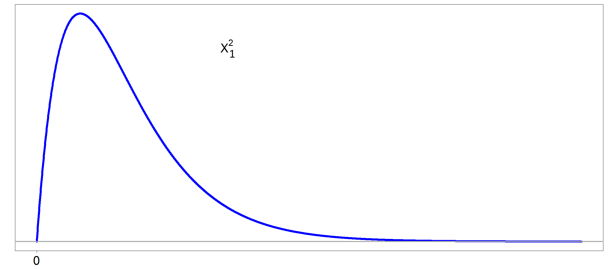
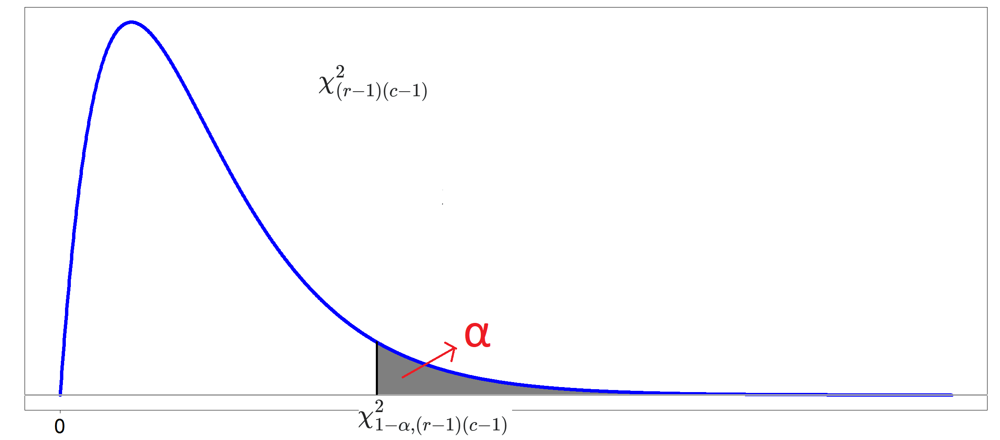

4 TESTES DE INDEPENDÊNCIA
4.1 O PROBLEMA FUNDAMENTAL
Grande parte das investigações científicas envolve variáveis qualitativas, que podem ter duas ou mais categorias.
4.1.1 VARIÁVEIS DICOTÔMICAS
- Situação de saúde: Doente / Não doente
- Exposição a fator de risco: Exposto / Não exposto
- Resultado acadêmico: Aprovado / Reprovado
- Sexo: Masculino / Feminino
- Resposta à pergunta: Sim / Não
4.1.2 VARIÁVEIS COM MÚLTIPLAS CATEGORIAS NOMINAIS
- Tipo sanguíneo: A / B / AB / O
- Estado civil: Solteiro / Casado / Divorciado / Viúvo
- Partido político: Partido A / Partido B / Partido C / Partido D
- Região: Norte / Nordeste / Centro-Oeste / Sudeste / Sul
- Tipo de escola: Pública municipal / Pública estadual / Federal / Privada
4.1.3 VARIÁVEIS COM MÚLTIPLAS CATEGORIAS ORDINAIS
- Grau de instrução: Fundamental / Médio / Superior / Pós-graduação
- Nível de satisfação: Muito insatisfeito / Insatisfeito / Neutro / Satisfeito / Muito satisfeito
- Classificação de risco: Baixo / Moderado / Alto / Muito alto
- Faixa de renda: Até 2 SM / 2–5 SM / 5–10 SM / Acima de 10 SM
Em qualquer contexto, quando se envolvem duas variáveis qualitativas com quaisquer números de categorias, a pergunta estatística permanece a mesma:
A distribuição de uma variável depende da categoria da outra?
Ou seja,
Existe relação entre essas categorias ou elas ocorrem de forma independente?
Essa é uma das questões mais importantes da Estatística Aplicada. Por exemplo, ao verificar a associação entre Situação de Saúde e Sexo, podemos chegar em duas situações possíveis:
- Se a proporção de mulheres dentro do grupo de doentes é muito próxima da proporção de mulheres dentro do grupo de não doentes, então há grandes evidências de que essas variáveis não estejam associadas (independentes).
- Se a proporção de mulheres dentro do grupo de doentes é bem diferente da proporção de mulheres dentro do grupo de não doentes, então há grandes evidências de que essas variáveis estejam associadas (dependentes).
4.2 O CONCEITO DE INDEPENDÊNCIA
Duas variáveis qualitativas são independentes quando:
A distribuição de uma variável não depende da categoria da outra variável.
Em termos probabilísticos, considere dois eventos \(A\) e \(B\). Os dois eventos são independentes se:
\[P(A \cap B) = P(A)\,P(B)\]
Ou, equivalentemente,
\[ P(A \mid B) = P(A) \]
Ou seja:
- A presença de uma característica não altera a probabilidade da outra
4.2.1 COMO OBSERVAMOS NA PRÁTICA
Na prática, não observamos probabilidades populacionais.
Observamos:
- Frequências amostrais
- Tabelas de contingência
- Distribuições empíricas
E então surge a pergunta crucial:
As diferenças observadas refletem associação real ou apenas variação amostral?
4.3 TESTE QUI-QUADRADO DE INDEPENDÊNCIA
4.3.1 SITUAÇÕES PRÁTICAS MOTIVADORAS
Para motivar o teste, considere os seguintes exemplos onde foram avaliadas 200 pessoas:
No primeiro exemplo, investigaremos a associação entre sexo e vacinação.
No segundo exemplo, investigaremos a associação entre região e vacinação.
Exemplo 1 — Vacinação por Sexo
| Vacinou | Não vacinou | Total | |
|---|---|---|---|
| Homem | 40 | 40 | 80 |
| Mulher | 100 | 20 | 120 |
| Total | 140 | 60 | 200 |
Exemplo 2 — Vacinação por Região
| Vacinou | Não vacinou | Total | |
|---|---|---|---|
| Região A | 85 | 35 | 120 |
| Região B | 55 | 25 | 80 |
| Total | 140 | 60 | 200 |
Ao olhar estas tabelas com as frequências absolutas fica complicado começar a investigar possíveis associações entre as variáveis porque os totais marginais são bem distintos. Uma alternativa é recorrer às tabelas com percentuais relativos por linha ou coluna.
Para o Exemplo 1, temos as seguintes tabelas relativas por linha e por coluna, respectivamente:
| Vacinou | Não vacinou | Total | |
|---|---|---|---|
| Homem | 40 (50.0%) | 40 (50.0%) | 80 (100%) |
| Mulher | 100 (83.3%) | 20 (16.7%) | 120 (100%) |
| Total | 140 (70%) | 60 (30%) | 200 (100%) |
| Vacinou | Não vacinou | Total | |
|---|---|---|---|
| Homem | 40 (28.6%) | 40 (66.7%) | 80 (40%) |
| Mulher | 100 (71.4%) | 20 (33.3%) | 120 (60%) |
| Total | 140 (100%) | 60 (100%) | 200 (100%) |
Para o Exemplo 2, temos as seguintes tabelas relativas por linha e por coluna, respectivamente:
| Vacinou | Não vacinou | Total | |
|---|---|---|---|
| Região A | 85 (70.8%) | 35 (29.2%) | 120 (100%) |
| Região B | 55 (68.8%) | 25 (31.2%) | 80 (100%) |
| Total | 140 (70%) | 60 (30.0%) | 200 (100%) |
| Vacinou | Não vacinou | Total | |
|---|---|---|---|
| Região A | 85 (60.7%) | 35 (58.3%) | 120 (60%) |
| Região B | 55 (39.3%) | 25 (41.7%) | 80 (40%) |
| Total | 140 (100%) | 60 (100%) | 200 (100%) |
Ao observar as tabelas relativas, conseguimos enxergar melhor possíveis padrões de associação entre as variáveis.
No Exemplo 1 — Vacinação por Sexo, a diferença nas proporções parece ser significativa:
- Entre os homens, 50% se vacinaram e 50% não se vacinaram.
- Entre as mulheres, 83,3% se vacinaram e apenas 16,7% não se vacinaram.
Essa diferença indica que a vacinação potencialmente está relacionada ao sexo: mulheres têm maior propensão a se vacinar.
No Exemplo 2 — Vacinação por Região, as proporções são bastante semelhantes:
- Na Região A, 70,8% se vacinaram e 29,2% não se vacinaram.
- Na Região B, 68,8% se vacinaram e 31,2% não se vacinaram.
Aqui, a diferença entre as regiões é mínima, o que sugere que a vacinação possa não depender da região.
Em resumo, ao comparar os percentuais relativos por linha ou coluna, conseguimos identificar rapidamente onde pode existir associação e onde ela é mínima, preparando o terreno para o cálculo de testes de associação.
4.3.2 SUPOSIÇÕES
Para que o teste qui-quadrado de independência produza resultados válidos, várias suposições devem ser verificadas antes da aplicação. A seguir estão as suposições centrais, com uma curta explicação e recomendações práticas.
Observações independentes
As observações (linhas da amostra) devem ser independentes entre si — por exemplo, cada indivíduo aparece apenas uma vez. Dependência entre observações (dados pareados, medidas repetidas, amostras agrupadas) viola a suposição e exige métodos alternativos.Amostragem aleatória ou representatividade
Os resultados são interpretáveis como inferência populacional quando os dados vêm de uma amostra aleatória ou de um processo que permita generalização (ou quando o estudo foi desenhado para representar a população-alvo).Os valores esperados
O teste pressupõe que os valores esperados não sejam muito pequenos. Diretrizes comuns:- Regra clássica (prática): idealmente todos os valores esperados ≥ 5.
- Variante mais flexível (Cochran): nenhum valor esperado < 1 e no máximo 20% das células com valor esperado < 5.
4.3.3 HIPÓTESES DE INTERESSE
Estamos interessados em avaliar se duas variáveis categóricas são independentes ou se existe associação entre elas. Assim, formalizamos:
- \(H_0\): As variáveis são independentes (não existe associação entre elas).
- \(H_1\): As variáveis são dependentes (existe associação entre elas).
4.3.4 ESTATÍSTICA DE TESTE
A estatística qui-quadrado começa com os valores observados, que representaremos pela notação
\[ O_{ij} \]
onde:
- \(i\) indica a linha da tabela, isto é, a categoria da primeira variável;
- \(j\) indica a coluna da tabela, isto é, a categoria da segunda variável.
Assim, \(O_{ij}\) representa o número de indivíduos observados na célula correspondente à linha \(i\) e coluna \(j\).
No Exemplo 1 — Vacinação por Sexo, temos:
(i=1): Homem
(i=2): Mulher
(j=1): Vacinou
(j=2): Não vacinou
Podemos então representar os valores observados na forma de uma matriz:
\[ O = \begin{pmatrix} O_{11} & O_{12} \\ O_{21} & O_{22} \end{pmatrix} \]
No nosso exemplo:
\[ O = \begin{pmatrix} 40 & 40 \\ 100 & 20 \end{pmatrix} \]
Esses números representam o que realmente foi observado na amostra de 200 pessoas.
Para construir a estatística qui-quadrado, precisamos comparar os valores observados com uma realidade hipotética. Essa realidade corresponde ao que esperaríamos se as variáveis fossem totalmente independentes (hipótese nula \(H_0\)).
A ideia é a seguinte:
Se os valores observados estiverem próximos dessa realidade hipotética, significa que os dados estão próximos do que seria esperado sob independência, ou seja, não há associação significativa entre as variáveis.
Se os valores observados estiverem longe dessa realidade, isso indica uma discrepância maior, sugerindo que existe uma associação significativa entre as variáveis.
Portanto, a “realidade fictícia” é, na prática, a situação de independência perfeita, que serve como referência para medir o quanto os dados observados se desviam dessa expectativa.
A pergunta que fica é: como calcular esses valores esperados sob independência?
4.3.4.1 OS VALORES ESPERADOS (SOB INDEPENDÊNCIA)
Assim como fizemos para os valores observados, também vamos utilizar uma notação para representar os valores esperados sob a hipótese de independência. Denotaremos esses valores por
\[ E_{ij} \]
onde:
- \(i\) indica a linha da tabela, isto é, a categoria da primeira variável;
- \(j\) indica a coluna da tabela, isto é, a categoria da segunda variável.
Portanto, \(E_{ij}\) representa o número de indivíduos que esperaríamos observar na célula da linha (i) e coluna (j) caso as variáveis fossem independentes.
Assim como fizemos antes, podemos organizar esses valores esperados na forma de uma matriz:
\[ E = \begin{pmatrix} E_{11} & E_{12} \\ E_{21} & E_{22} \end{pmatrix} \]
Agora, a pergunta que fica é como podemos calcular estes valores esperados?
Sem perda de generalidade, retomemos a tabela de porcentagens por coluna do Exemplo 1:
| Vacinou | Não vacinou | Total | |
|---|---|---|---|
| Homem | 40 (28.6%) | 40 (66.7%) | 80 (40%) |
| Mulher | 100 (71.4%) | 20 (33.3%) | 120 (60%) |
| Total | 140 (100%) | 60 (100%) | 200 (100%) |
Já vimos que as porcentagens por coluna são muito distintas das proporções marginais das linhas. Isso mostra que pode não haver independência.
Sob independência perfeita, cada coluna deveria se dividir entre homens e mulheres exatamente de acordo com suas proporções no total da amostra (40% homens e 60% mulheres). Assim, os valores em “?” da tabela a seguir são justamente os valores que equilibram as colunas de acordo com essa distribuição:
| Vacinou | Não vacinou | Total | |
|---|---|---|---|
| Homem | ? (40%) | ? (40%) | 80 (40%) |
| Mulher | ? (60%) | ? (60%) | 120 (60%) |
| Total | 140 (100%) | 60 (100%) | 200 (100%) |
Calculando 40% e 60% de cada total de coluna, obtemos:
| Vacinou | Não vacinou | Total | |
|---|---|---|---|
| Homem | 56 (40%) | 24 (40%) | 80 (40%) |
| Mulher | 84 (60%) | 36 (60%) | 120 (60%) |
| Total | 140 (100%) | 60 (100%) | 200 (100%) |
Portanto, os valores esperados sob independência para esta situação são:
\[ E = \begin{pmatrix} 56 & 24 \\ 84 & 36 \end{pmatrix} \] Esses valores representam a “realidade hipotética” de independência: como os dados deveriam se distribuir se não houvesse relação entre sexo e vacinação.
REGRA DE BOLSO PRA CALCULAR O VALOR ESPERADO
Existe uma regra fácil para calcular o valor esperado de qualquer casela. Seja \(A\) o evento “Vacinou” e \(B\) o evento “Homem”, por exemplo. Queremos encontrar o valor esperado \(E_{11}\), sob independência, da casela “Vacinou x Homem”. Se n é o valor total da amostra (200), então o valor esperado para esta casela é dado por:
\[ E_{11} = n P(A\cap B) \] Mas, se \(A\) e \(B\) são independentes, então
\[ \begin{aligned} E_{11} &= n\,P(A)\,P(B) \\ &= 200 \times \frac{80}{200} \times \frac{140}{200} \\ &= \frac{80 \times 140}{200} \\ &= \frac{\textrm{Total Linha 1} \times \textrm{Total Coluna 1}}{\textrm{Total Geral}}\\ &= 56 \end{aligned} \] Assim, para qualquer casela no teste qui-quadrado, calcule o valor esperado como
\[ E_{ij}=\frac{\textrm{Total Linha i} \times \textrm{Total Coluna j}}{\textrm{Total Geral}} \]
No próximo passo, iremos comparar esses valores com os observados para construir a estatística qui-quadrado.
4.3.4.2 CONSTRUÇÃO DA ESTATÍSTICA
Agora sim, podemos organizar os dados em duas tabelas:
Valores observados (\(O\)):
\[ O = \begin{pmatrix} 40 & 40 \\ 100 & 20 \end{pmatrix} \]
Valores esperados sob independência (\(E\)):
\[ E = \begin{pmatrix} 56 & 24 \\ 84 & 36 \end{pmatrix} \]
O passo seguinte é avaliar o quanto os valores observados se afastam dos valores esperados.
Se \(O\) e \(E\) forem muito próximos, isso indica que a independência é uma boa conclusão para os dados.
Por outro lado, se houver grandes discrepâncias entre \(O\) e \(E\), isso sugere que existe associação entre as variáveis.
É justamente essa medida de discrepância que será quantificada pela estatística qui-quadrado. Uma forma natural de começar a medir a distância entre as tabelas de valores observados (\(O\)) e esperados (\(E\)) é calcular a simples diferença:
\[ O - E \]
Matriz \(O - E\):
\[ O-E = \begin{pmatrix} -16 & 16 \\ 16 & -16 \end{pmatrix} \]
No entanto, essa abordagem apresenta dois problemas importantes:
- Cancelamento dos desvios: a soma dos valores positivos e negativos é sempre nula, mesmo que existam grandes discrepâncias.
- Escala dos valores: diferenças em categorias com maiores frequências tendem a ser naturalmente maiores, o que dificulta a comparação justa entre células da tabela.
Para resolver esses problemas, adotamos duas estratégias:
- Elevar ao quadrado os desvios (\((O - E)^2\)), o que elimina os sinais e evita cancelamentos.
- Dividir cada diferença pelo valor esperado (\(E\)), o que padroniza as discrepâncias de acordo com a escala de cada célula.
Assim, obtemos a matriz dos contribuintes da estatística qui-quadrado:
Matriz \((O - E)^2/E\):
\[ (O - E)^2/E = \begin{pmatrix} 4,57 & 10.67 \\ 3,05 & 7.11 \end{pmatrix} \]
Por fim, formalmente, a estatística qui-quadrado é definida como a soma de todos esses valores:
\[ \chi^2 = \sum_{i=1}^{2} \sum_{j=1}^{2} \frac{(O_{ij}-E_{ij})^2}{E_{ij}} \]
No nosso exemplo:
\[ \chi^2_{\text{obs}} = 4,57 + 10,67 + 3,05 + 7,11 = 25,40 \]
Esse número sintetiza a discrepância entre os valores observados e os esperados. Quanto maior for \(\chi^2\), maior é a evidência de que existe uma associação entre as variáveis. Se repetirmos este mesmo raciocínio para o exemplo 2, o valor será \(\chi^2_{\text{obs}}=0,09\).
Estatística do teste Qui-Quadrado:
De maneira geral, se a primeira variável tem \(r\) categorias e a segunda variável tem \(c\) categorias, a estatística de teste é dada por:
\[ \chi^2 = \sum_{i=1}^{r} \sum_{j=1}^{c} \frac{(O_{ij}-E_{ij})^2}{E_{ij}} \]
onde:
- \(O_{ij}\) é o valor observado na célula da linha \(i\) e coluna \(j\);
- \(E_{ij}\) é o valor esperado sob independência na mesma célula;
- \(r\) é o número de linhas da tabela;
- \(c\) é o número de colunas da tabela.
A questão que surge é: como saber se os valores são de fato significativos e indicam uma associação real entre as variáveis? Para responder a isso, precisamos dar um passo adiante e avaliar a significância da estatística.
Sob a hipótese nula (\(H_0\)), a estatística de teste segue uma distribuição associada aos seus possíveis valores amostrais. No caso do teste qui-quadrado de independência, a estatística \(\chi^2\) apresenta aproximadamente uma distribuição qui-quadrado graus de liberdade, desde que as condições de frequência esperada sejam atendidas.
Assim,
\[ \chi^2 \sim \chi^2_{(r-1)(c-1)} \]
Nos nossos exemplos, como \(r=c=2\), tem-se que a estatística de teste \(\chi^2\) possui a seguinte distribuição (sob \(H_0\)):
\[ \chi^2 \sim \chi^2_{(2-1)(2-1)}=\chi^2_1 \]
Essa distribuição é apresentada a seguir:

4.3.4.3 DECISÃO DO TESTE
Como valores grandes da estatística indicam maior evidência contra a hipótese de independência, a região crítica está na cauda direita, caracterizando um teste unilateral à direita.
O nível de significância \(\alpha\) é definido por
\[ P\left(\chi^2_{(r-1)(c-1)} \geq \chi^2_{1-\alpha,(r-1)(c-1)} \right) = \alpha, \]
onde \(\chi^2_{1-\alpha,(r-1)(c-1)}\) representa o quantil de ordem \(1-\alpha\) da distribuição qui-quadrado com \((r-1)(c-1)\) graus de liberdade.
Observe esta representação na figura abaixo:

Rejeita-se \(H_0\) ao nível de significância \(\alpha\) se
\[ \chi^2_{\text{obs}} \geq \chi^2_{1-\alpha,(r-1)(c-1)}. \]
De maneira alternativa, o valor-\(p\) é definido por
\[ p\text{-valor} = P\left(\chi^2_{(r-1)(c-1)} \geq \chi^2_{\text{obs}}\right). \]
A regra de decisão fica:
Rejeita-se \(H_0\) ao nível de significância \(\alpha\) se
\[ p\text{-valor} \leq \alpha. \]
MÉTODO DA REGIÃO CRÍTICA
Considerando um \(\alpha = 5\%\),o valor crítico obtido é dado por:
\[\chi^2_{0.95,1=3,84}\]
No exemplo 1, como \(\chi^2_{\text{obs}}=25,40 > 3,84\), então rejeitamos \(H_0\) e há evidências de que as variáveis sexo e vacinação estão associadas.
No exemplo 2, como \(\chi^2_{\text{obs}}=0,09 < 3,84\), então não rejeitamos \(H_0\) e há evidências de que as variáveis região e vacinação não estão associadas.
MÉTODO DO VALOR-P
O valor-p do teste aplicado ao exemplo 1 é \(p\text{-valor} = P\left(\chi^2_1 \geq 25,4\right)=4.65e^{-7}\). Como p-valor \(<0,05\), rejeita-se \(H_O\) e há evidências de que as variáveis sexo e vacinação estão associadas.
O valor-p do teste aplicado ao exemplo 2 é \(p\text{-valor} = P\left(\chi^2_1 \geq 0,09\right)=0,76\). Como p-valor \(>0,05\), não rejeita-se \(H_O\) e há evidências de que as variáveis região e vacinação não estão associadas.
4.3.5 OS RESÍDUOS PADRONIZADOS
O teste qui-quadrado responde se existe associação entre as variáveis, mas ele não diz quais combinações são responsáveis pela associação. Para isso, usamos os resíduos
Para cada célula da tabela:
\[ O_{ij} - E_{ij} \]
- Interpretação:
- Valor positivo → observado maior que esperado
- Valor negativo → observado menor que esperado
- Valor positivo → observado maior que esperado
Problema: não estão padronizados, então não são comparáveis entre células. Assim, ajustamos pela variabilidade esperada:
\[ R_{ij} = \frac{O_{ij} - E_{ij}}{\sqrt{E_{ij}}} \]
Agora temos uma medida comparável entre células. E, sob a hipótese nula (\(H_0\): independência):
\[ R_{ij} \approx N(0,1) \]
Ou seja, os resíduos se comportam aproximadamente como uma normal padrão. Isso permite usar valores críticos conhecidos. Com esses valores críticos é possível detectar a influência de cada casela na estatística qui-quadrado:
| Intervalo | Interpretação |
|---|---|
| \(R_{ij} < -1.96\) | O observado é muito menor que o esperado |
| \(-1.96 \leq R_{ij} \leq 1.96\) | Dentro do esperado |
| \(R_{ij} > 1.96\) | O observado é muito maior que o esperado |
As células com resíduos grandes (em módulo) são as que mais contribuem para o qui-quadrado
Exemplos:
- \(R_{ij} = 2.5\) → muito mais observações que o esperado
- \(R_{ij} = -3.0\) → muito menos observações que o esperado
- \(R_{ij} = 2.5\) → muito mais observações que o esperado
Essas células são chamadas de combinações influentes
4.4 TESTE EXATO DE FISHER
4.4.1 SITUAÇÃO PRÁTICA MOTIVADORA
Considere agora um estudo piloto conduzido com 35 pacientes para investigar se existe associação entre uso de um novo medicamento e ocorrência de um efeito adverso.
Os resultados observados foram os seguintes:
| Efeito adverso | Sem efeito | Total | |
|---|---|---|---|
| Usou medicamento | 1 | 14 | 15 |
| Não usou | 8 | 12 | 20 |
| Total | 9 | 26 | 35 |
Assim como fizemos anteriormente, uma forma inicial de investigar possíveis associações entre as variáveis é observar tabelas com percentuais relativos.
A seguir, apresentamos a tabela de percentuais por linha:
| Efeito adverso | Sem efeito | Total | |
|---|---|---|---|
| Usou medicamento | 1 (6,7%) | 14 (93,3%) | 15 (100%) |
| Não usou | 8 (40,0%) | 12 (60,0%) | 20 (100%) |
| Total | 9 (25,7%) | 26 (74,3%) | 35 (100%) |
Observando os percentuais, nota-se que:
- Entre os pacientes que usaram o medicamento, apenas 6,7% apresentaram efeito adverso.
- Entre os pacientes que não usaram o medicamento, 40,0% apresentaram efeito adverso.
Essas diferenças sugerem que pode existir associação entre o uso do medicamento e a ocorrência de efeito adverso. Entretanto, essa conclusão ainda é apenas uma observação baseada nos dados da amostra.
Para avaliar estatisticamente essa possível associação, poderíamos pensar em aplicar o teste qui-quadrado de independência. Contudo, antes disso, é importante verificar as frequências esperadas em cada célula da tabela.
Para utilizar o teste qui-quadrado de independência, lembre-se que todas as caselas devem ter uma frequência esperada maior ou igual a 5
Recordando, pela regra de bolso, que a frequência esperada é calculada por:
\[ E_{ij} = \frac{(\text{Total da linha i})(\text{Total da coluna j})}{\text{Total geral}} \]
Vamos calcular, por exemplo, a frequência esperada para a célula “Usou medicamento e teve efeito adverso”:
\[ E_{11} = \frac{(15)(9)}{35} \approx 3{,}86 \]
Note que essa frequência esperada é menor que 5.
Calculando as demais frequências esperadas:
| Efeito adverso | Sem efeito | Total | |
|---|---|---|---|
| Usou medicamento | 3,86 | 11,14 | 15 |
| Não usou | 5,14 | 14,86 | 20 |
| Total | 9 | 26 | 35 |
Observa-se que uma das células apresenta frequência esperada menor que 5.
Nessas situações, a aproximação utilizada pelo teste qui-quadrado pode não ser adequada, pois o teste depende de uma aproximação assintótica que funciona melhor quando as frequências esperadas são suficientemente grandes.
Nesse caso, uma alternativa mais apropriada é utilizar o teste exato de Fisher.
4.4.2 SUPOSIÇÕES
Para que o teste exato de Fisher produza resultados válidos, algumas condições devem ser consideradas antes da sua aplicação. A seguir estão as suposições centrais, com uma curta explicação e recomendações práticas.
Observações independentes
As observações (linhas da amostra) devem ser independentes entre si — por exemplo, cada indivíduo aparece apenas uma vez. Dependência entre observações (dados pareados, medidas repetidas, amostras agrupadas) viola a suposição e exige métodos alternativos.Amostragem aleatória ou representatividade
Os resultados são interpretáveis como inferência populacional quando os dados vêm de uma amostra aleatória ou de um processo que permita generalização (ou quando o estudo foi desenhado para representar a população-alvo).Totais marginais considerados fixos
O teste de Fisher parte da ideia de que os totais das linhas e das colunas são fixos. Ou seja, a análise considera todas as tabelas possíveis que mantêm esses mesmos totais marginais.
Em muitas situações reais, os totais marginais não são fixos. Por exemplo, se você está estudando a relação entre tabagismo e doença pulmonar, você não controla quantos fumantes e não-fumantes existem; eles surgem naturalmente da população. O teste de Fisher ainda funciona e é conservador nessas situações, mas a interpretação exata da p-valor fica um pouco mais “teórica”, porque a suposição de marginais fixos não corresponde exatamente à realidade.
Diferentemente do teste qui-quadrado, o teste exato de Fisher não depende de aproximações assintóticas e não exige frequências esperadas mínimas.
Por esse motivo, ele é particularmente útil quando:
- a amostra é pequena;
- existem frequências esperadas menores que 5 em alguma célula da tabela.
Embora seja mais conhecido para tabelas 2 × 2, o teste também pode ser aplicado a tabelas maiores, embora o cálculo do valor-p possa exigir simulações computacionais nesses casos.
4.4.3 HIPÓTESES DE INTERESSE
Assim como no teste qui-quadrado de independência, estamos interessados em avaliar se duas variáveis categóricas são independentes ou se existe associação entre elas.
Formalmente, as hipóteses são:
- \(H_0\): As variáveis são independentes (não existe associação entre elas).
- \(H_1\): As variáveis são dependentes (existe associação entre elas).
No contexto do exemplo apresentado, poderíamos escrever de forma mais específica:
- \(H_0\): O uso do medicamento e a ocorrência de efeito adverso são independentes.
- \(H_1\): Existe associação entre o uso do medicamento e a ocorrência de efeito adverso.
4.4.4 CONSTRUÇÃO DO TESTE
Ao considerar, inicialmente, o caso 2x2, retomemos o exemplo apresentado anteriormente, em que investigamos a associação entre uso de um medicamento e ocorrência de efeito adverso em um estudo com 35 pacientes.
| Efeito adverso | Sem efeito | Total | |
|---|---|---|---|
| Usou medicamento | 1 | 14 | 15 |
| Não usou | 8 | 12 | 20 |
| Total | 9 | 26 | 35 |
No teste exato de Fisher, partimos da ideia de que os totais marginais da tabela são fixos, ou seja:
- 15 pacientes usaram o medicamento
- 20 pacientes não usaram
- 9 pacientes tiveram efeito adverso
- 26 pacientes não tiveram efeito
Assim, a pergunta que o teste responde é a seguinte:
Supondo que o uso do medicamento não influencie a ocorrência de efeito adverso (isto é, assumindo \(H_0\) verdadeira), qual seria a probabilidade de observar uma tabela como a obtida?
Sob \(H_0\), o efeito adverso não depende do uso do medicamento. Assim, os 9 pacientes que apresentaram efeito adverso poderiam aparecer em qualquer um dos dois grupos apenas por variação aleatória.
Para responder à pergunta do teste, consideramos todas as tabelas possíveis que preservam esses mesmos totais marginais.
4.4.4.1 TABELAS POSSÍVEIS COM OS MESMOS TOTAIS MARGINAIS
Como os totais são fixos, a única célula que pode variar, sem perda de generalidade, é o número de indivíduos que:
- usaram o medicamento
- e tiveram efeito adverso
Denotemos essa célula por \(a\).
| Efeito adverso | Sem efeito | Total | |
|---|---|---|---|
| Usou medicamento | \(a\) | \(15-a\) | 15 |
| Não usou | \(9-a\) | \(11+a\) | 20 |
| Total | 9 | 26 | 35 |
No nosso exemplo, observamos
\[ a = 1 \]
Ou seja, apenas 1 paciente que usou o medicamento apresentou efeito adverso.
A pergunta que surge é:
Qual é a probabilidade de observar exatamente 1 paciente com efeito adverso entre os 15 que usaram o medicamento, supondo que os efeitos adversos estejam distribuídos aleatoriamente entre os pacientes?
PENSE: Quantas tabelas possíveis existem com esses totais marginais fixos?
4.4.4.2 DISTRIBUIÇÃO HIPERGEOMÉTRICA
A distribuição hipergeométrica descreve o número de sucessos obtidos quando retiramos uma amostra sem reposição de uma população finita.
Suponha uma população com:
- \(N\) elementos no total
- \(K\) elementos que possuem uma determinada característica (chamados de sucessos)
- \(N-K\) elementos que não possuem essa característica
Agora selecionamos uma amostra de tamanho \(n\), sem reposição.
Se denotarmos por \(X\) o número de sucessos observados na amostra, então dizemos que
\[ X \sim \text{Hipergeométrica}(N,K,n) \]
A função de probabilidade dessa distribuição é dada por
\[ P(X=x)= \frac{\binom{K}{x}\binom{N-K}{n-x}} {\binom{N}{n}} \]
onde:
- \(\binom{K}{x}\) representa o número de maneiras de escolher \(x\) sucessos entre os \(K\) existentes
- \(\binom{N-K}{n-x}\) representa o número de maneiras de escolher os restantes elementos sem sucesso
- \(\binom{N}{n}\) representa todas as formas possíveis de selecionar \(n\) elementos da população
Essa distribuição surge naturalmente quando o processo de seleção ocorre sem reposição, isto é, quando um elemento selecionado não pode ser escolhido novamente.
4.4.4.3 LIGAÇÃO COM O TESTE EXATO DE FISHER
O problema do teste exato de Fisher pode ser interpretado exatamente como um experimento desse tipo.
No nosso exemplo:
- existem \(N = 35\) pacientes no total
- \(K = 9\) tiveram efeito adverso
- \(26\) não tiveram efeito adverso
- selecionamos \(n = 15\) pacientes (os que usaram o medicamento)
Queremos saber quantos desses 15 pacientes apresentam efeito adverso.
Se denotarmos por \(A\) o número de pacientes com efeito adverso entre os que usaram o medicamento, então, sob \(H_0\),
\[ A \sim \text{Hipergeométrica}(N=35,\,K=9,\,n=15) \]
4.4.4.4 PROBABILIDADE DE UMA TABELA ESPECÍFICA
A probabilidade de observar \(a\) pacientes com efeito adverso entre os 15 que usaram o medicamento é
\[ P(A=a)= \frac{\binom{9}{a}\binom{26}{15-a}} {\binom{35}{15}} \]
onde:
- \(\binom{9}{a}\) representa o número de maneiras de escolher \(a\) pacientes com efeito adverso
- \(\binom{26}{15-a}\) representa o número de maneiras de escolher os restantes sem efeito adverso
- \(\binom{35}{15}\) representa todas as possíveis seleções de 15 pacientes entre os 35
Cada valor possível de \(a\) corresponde, portanto, a uma tabela de contingência diferente que preserva os mesmos totais marginais.
4.4.4.5 PROBABILIDADE DA TABELA OBSERVADA
No nosso exemplo, observamos \(a=1\).
Portanto,
\[ P(A=1)= \frac{\binom{9}{1}\binom{26}{14}} {\binom{35}{15}}=0.02676134 \]
Essa expressão fornece a probabilidade exata de observar a tabela obtida, assumindo que \(H_0\) seja verdadeira.
4.4.4.6 CONSTRUÇÃO DO VALOR-P
Entretanto, para realizar o teste de hipótese não consideramos apenas a probabilidade da tabela observada.
O valor-p do teste exato de Fisher é obtido somando as probabilidades de:
- todas as tabelas possíveis com os mesmos totais marginais
- que sejam tão extremas quanto ou mais extremas que a tabela observada, de acordo com a hipótese alternativa
- uma tabela é considerada extrema quando possui probabilidade menor ou igual à probabilidade da tabela observada sob \(H_0\)
Assim,
\[ p\text{-valor} = \sum P(\text{tabelas tão extremas quanto a observada}) \]
Todas essas probabilidades são calculadas utilizando a mesma fórmula da distribuição hipergeométrica.
No nosso exemplo, a tabela observada corresponde a
\[ a_{obs}=1 \]
com probabilidade
\[ P(A=1)=0.02676134 \]
Portanto, as tabelas extremas são aquelas cuja probabilidade é menor ou igual a esse valor.
No nosso caso, isso ocorre para
\[ a = 0,7,8,9 \]
- \(a=0\):
| Efeito adverso | Sem efeito | Total | |
|---|---|---|---|
| Usou medicamento | 0 | 15 | 15 |
| Não usou | 9 | 11 | 20 |
| Total | 9 | 26 | 35 |
\[ P(A=0)=0.002378785 \]
- \(a=7\):
| Efeito adverso | Sem efeito | Total | |
|---|---|---|---|
| Usou medicamento | 7 | 8 | 15 |
| Não usou | 2 | 18 | 20 |
| Total | 9 | 26 | 35 |
\[ P(A=7)=0.01731616 \]
- \(a=8\):
| Efeito adverso | Sem efeito | Total | |
|---|---|---|---|
| Usou medicamento | 8 | 7 | 15 |
| Não usou | 1 | 19 | 20 |
| Total | 9 | 26 | 35 |
\[ P(A=8)=0.001822754 \]
- \(a=9\):
| Efeito adverso | Sem efeito | Total | |
|---|---|---|---|
| Usou medicamento | 9 | 6 | 15 |
| Não usou | 0 | 20 | 20 |
| Total | 9 | 26 | 35 |
\[ P(A=9)=0.00007088486 \]
Assim, o valor-p é obtido somando as probabilidades dessas tabelas:
\[ p\text{-valor} = P(A=0)+P(A=1)+P(A=7)+P(A=8)+P(A=9)\approx 0,04835 \]
4.4.4.7 REGRA DE DECISÃO
Após calcular o valor-p, aplicamos a regra usual dos testes de hipótese:
se \(p\text{-valor} \leq \alpha\), rejeitamos \(H_0\), concluindo que há evidência de associação entre as variáveis;
se \(p\text{-valor} > \alpha\), não rejeitamos \(H_0\), indicando que os dados não fornecem evidência suficiente de associação.
No nosso exemplo, considere \(\alpha=0,05\). Como o valor-p é menor que 0.05, rejeitamos a hipotese nula \(H_0\). Assim, há evidências de que existe associação entre a utilização do medicamento e o aparecimento do efeito adverso.
4.4.5 APLICANDO O TESTE EM TABELAS MAIORES
O teste exato de Fisher não está restrito apenas a tabelas \(2 \times 2\). Ele também pode ser aplicado a tabelas de contingência maiores, como \(2 \times 3\), \(3 \times 3\) ou dimensões ainda maiores.
Nesses casos, o princípio do teste permanece o mesmo: calcular a probabilidade da tabela observada condicionando aos totais marginais fixos e somar as probabilidades de todas as tabelas tão extremas quanto ou mais extremas que a observada.
Entretanto, conforme o tamanho da tabela aumenta, o número de tabelas possíveis cresce muito rapidamente, tornando o cálculo exato mais complexo do ponto de vista computacional.
Por isso, em tabelas grandes, o R pode utilizar métodos computacionais ou simulações de Monte Carlo para aproximar o valor-p.
4.5 COEFICIENTE DE CRÁMER
Após a aplicação do teste qui-quadrado e exato de Fisher, sabemos se existe ou não associação entre duas variáveis categóricas. No entanto, essa informação é incompleta do ponto de vista prático, pois o teste não nos diz o quão forte é essa associação.
É justamente nesse contexto que surge o coeficiente de Crámer, uma medida construída a partir da estatística do qui-quadrado com o objetivo de quantificar a intensidade da relação entre as variáveis.
A definição do coeficiente é dada por:
\[ V = \sqrt{\frac{\chi^2}{n \cdot \min(r - 1, c - 1)}} \]
onde \(\chi^2\) é a estatística do teste, \(n\) é o tamanho da amostra, e \(r\) e \(c\) correspondem ao número de linhas e colunas da tabela de contingência.
Observe que o coeficiente de Crámer não utiliza apenas o valor do qui-quadrado. Ele incorpora também o tamanho da amostra e um fator de correção relacionado às dimensões da tabela. Esse ajuste é fundamental, pois tabelas maiores tendem naturalmente a produzir valores maiores de \(\chi^2\), mesmo quando a associação não é particularmente forte.
Uma propriedade importante do coeficiente de Crámer é que ele está sempre no intervalo entre 0 e 1. Isso facilita bastante sua interpretação, pois permite comparar resultados em diferentes estudos ou contextos.
De maneira geral, podemos interpretar seus valores da seguinte forma:
- valores próximos de 0 indicam associação fraca ou inexistente
- valores intermediários indicam associação moderada
- valores próximos de 1 indicam associação forte
Como regra de bolso, é comum utilizar a seguinte classificação:
| Valor de \(V\) | Interpretação |
|---|---|
| \(0.00\) a \(0.10\) | Muito fraca |
| \(0.10\) a \(0.30\) | Fraca |
| \(0.30\) a \(0.50\) | Moderada |
| \(> 0.50\) | Forte |
Esses pontos de corte devem ser usados com cautela, pois a interpretação da magnitude depende do contexto do problema e da área de aplicação.
O coeficiente de Cramer pode ser utilizado mesmo se foi realizado o teste exato de Fisher, uma vez que o coeficiente nao depende das suposições do teste qui-quadrado pra ser realizado.
4.6 RECOMENDAÇÕES GERAIS
Na prática, tanto o teste qui-quadrado de independência quanto o teste exato de Fisher podem ser utilizados para avaliar associação entre duas variáveis categóricas. A escolha entre eles depende principalmente do tamanho da amostra e da frequência esperada nas células da tabela.
De modo geral, o teste qui-quadrado é o mais utilizado quando as frequências esperadas são suficientemente grandes. Uma recomendação comum é que todas as frequências esperadas sejam maiores que 5, ou pelo menos que a grande maioria das células satisfaça essa condição. Nessas situações, a aproximação pela distribuição qui-quadrado funciona muito bem.
Quando existem frequências esperadas pequenas, especialmente menores que 5, a aproximação do qui-quadrado pode se tornar imprecisa. Nesses casos, recomenda-se utilizar o teste exato de Fisher, que calcula o valor-p a partir das probabilidades exatas das tabelas possíveis.
Em termos de poder estatístico, quando as condições do qui-quadrado são satisfeitas, ele tende a ser mais poderoso e computacionalmente mais simples de aplicar. O teste de Fisher, por sua vez, é mais conservador em algumas situações, mas possui a vantagem de não depender de aproximações assintóticas.
Quando a tabela possui muitas células com frequências muito pequenas, uma estratégia comum é agregar categorias semelhantes, reduzindo o número de células e aumentando as frequências esperadas. No entanto, essa agregação deve sempre fazer sentido do ponto de vista substantivo, e não apenas estatístico.
Assim, de forma geral:
- Utilize o teste qui-quadrado quando as frequências esperadas forem adequadas.
- Utilize o teste exato de Fisher quando houver células com frequências pequenas.
- Considere agregar categorias quando houver muitas células raras.
- Sempre interprete os resultados no contexto do problema estudado.